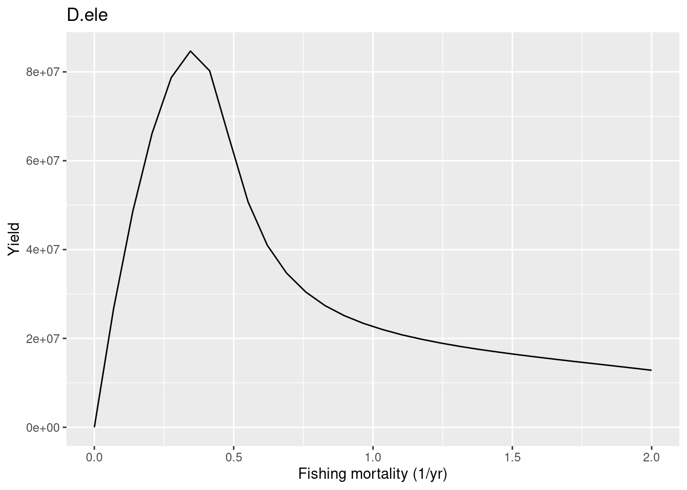

Mizer can be used to explore future scenarios, where a simulation continues to project through time under different potential scenarios (e.g. to test fisheries management options or climate change scenarios). The goal of this and the next “changing resources” tutorial is to who you how to set these up these projections so that you can design your own future scenarios to explore.
As usual, we need to have some packages installed.
httr (1.4.3 -> 1.4.4) [CRAN]
There is a binary version available but the source version is later:
binary source needs_compilation
httr 1.4.3 1.4.4 FALSE
* checking for file ‘/private/var/folders/w7/3yk2257x6016ch_prhf0wwrshwgt88/T/RtmptBjRkN/remotes1a0d448cf719/sizespectrum-mizerExperimental-2465461/DESCRIPTION’ ... OK
* preparing ‘mizerExperimental’:
* checking DESCRIPTION meta-information ... OK
* checking for LF line-endings in source and make files and shell scripts
* checking for empty or unneeded directories
* building ‘mizerExperimental_2.3.1.tar.gz’
* checking for file ‘/private/var/folders/w7/3yk2257x6016ch_prhf0wwrshwgt88/T/RtmptBjRkN/remotes1a0d74b6f0ae/sizespectrum-mizerMR-7ef0515/DESCRIPTION’ ... OK
* preparing ‘mizerMR’:
* checking DESCRIPTION meta-information ... OK
* checking for LF line-endings in source and make files and shell scripts
* checking for empty or unneeded directories
* building ‘mizerMR_0.0.3.tar.gz’
Let’s start by exploring what happens if we change fishing in the future. To do this we set up two scenarios, one where the model starts with the last time step of the fished scenario and continues into the future (the “status quo”). The other will be designed to explore “more sustainable scenario”. Let’s pick up the the model output we saved from the end of the last tutorial.
Let’s start a new simulation that begins with the logistic effort from 2020 and projects forward for 50 years. We will apply a linear decrease in effort for toothfish to a target value (here assumed for simplicity to be F=0.2).
To do this we need to work the effort array again (time x gear) to enable changes in effort through time.
That was Scenario 1 (“status quo”), now let’s set up Scenario 2, the “more sustainable” option we wish to explore. Again, if we are working in the same units as the effort above we can change the F below to scale effort to be consistent with a value of F=0.2. So we need to set effort= catchability/targetF Otherwise if you assume targetF= catchability*E, and set catchability to 1, you can just use targetF=0.2 directly for Scenario 2.
proj_effort_scen2<-proj_effort_scen1targetF<-0.2/gear_params(params)$catchability[1]select_gear="longline"# reach target by 10 yearsproj_effort_scen2[1:10,select_gear]<-seq(from =proj_effort_scen2[1], to =targetF, length =10)# then hold at targetproj_effort_scen2[11:50, select_gear]<-targetF# check it#plot(proj_effort_scen2,typ="l")
Now we want to run the simulation forward using the project function.
# run the simulations forward, both using the 2020 abundances as initial valuesparams<-setInitialValues(params, sim)sim_scen1<-project(params, effort =proj_effort_scen1, t_max =50)sim_scen2<-project(params, effort =proj_effort_scen2, t_max =50)
How has this affected the catches and the biomass of other species in the system relative to fishing levels in 2020?
#set the scenario to examine relative to 2020 levelsscen<-sim_scen2plotYield(scen)

# plot change in biomass under each scenario relative to current valuesB_current<-getBiomass(scen)[1, ]Brel_scen<-melt(sweep(getBiomass(scen), 2, B_current, "/"))colnames(Brel_scen)[2]<-"Species"legend_levels<-intersect(names(scen@params@linecolour), Brel_scen$Species)ggplot(Brel_scen)+geom_line(aes(x =time,y =value,color =Species), size =1)+geom_hline(yintercept =1, linetype =1, colour ="grey", size =0.75)+scale_y_continuous(name ="Relative biomass")+scale_color_manual(values =sim@params@linecolour[legend_levels])+theme(legend.key =element_rect(fill ="white"))
The above plot shows that relative to 2020 reducing fishing mortality to 0.2 still results in further declines in biomass and catches.
To compare the status of the stock we need to express the changes relative to the unfished state according to the model. This will provide us with a rough indicator of the level of depletion. Generally, we would consider a stock to be collapsed if biomass was < 0.1 of the unfished levels. Some data-poor single species fisheries management strategies seek for depletion to be around or above 0.5 of unfished levels.
Let’s take a look at the relative exploitation status of the stocks using the projected values for 2050. We will put the y-axis scale is log10 to better visualise the differences across species.
# plot change in biomass under each scenario relative to unfished values# get saved values from steady state without fishing (previous tutorial)sim0<-readRDS("sim0.rds")# get the unfished biomassesB_unfished<-getBiomass(sim0)[1, ]#scen 1Brel_scen1_2050<-getBiomass(sim_scen1)["2050",]/B_unfished#scen 2Brel_scen2_2050<-getBiomass(sim_scen2)["2050",]/B_unfishedBrel_scens<-rbind(data.frame(species=names(Brel_scen1_2050),value=Brel_scen1_2050,scen="scen1"),data.frame(species=names(Brel_scen2_2050),value=Brel_scen2_2050,scen="scen2"))# barplot comparing the 2 scenarios by 2050ggplot(Brel_scens, aes(fill=scen, y=value, x=species))+geom_bar(position="dodge", stat="identity")+geom_hline(yintercept =0.1, linetype =2, colour ="red", size =0.5)+scale_y_log10(name ="log10(Biomass/Biomass Unfished)")
Species with B/B_unfished values that are below the red dashed line imply the stock is still collapsed.
We can see that when we decrease fishing to the targetF under scenario 2 this slightly improves the relative biomass compared to the status quo. Recovery would require lower levels of F to ensure sustainable fishing in the long-term. Another thing to note is that relative to the unfished community there are several species that actually increase under this fishing scenario - this is what happens when account for food web interactions in models!
Set up your own fishing scenario: simpler comparison of steady states
Rather than an entire time-series, we can also simply examine differences between two time-averaged states under different fishing regimes.
We can alter the fishing parameters using a function called gear_params() and by changing the effort input.
Let’s take a look at the fishing parameters.
We can group species together according to the gears they are caught by. Let’s imagine a big super trawler.
# allocate species to gear typesgear_params(params)<-data.frame( gear =c("longline", "super_trawler"), species =c("D.ele", "C.gun"), catchability =c(1, 1), sel_fun =c("knife_edge", "knife_edge"), knife_edge_size =c(2722, 52))#check itgear_params(params)
Note that catchability is set to 1. This is because the fishing “effort” was here assumed to be the fishing mortality rate of fully selected sizes (see here setFishing).
params<-setFishing(params, initial_effort =0.1)
Now let’s run two simulations, one with light fishing mortality (F = 0.2) and one heavy fishing (F = 1.5).
# plot change in biomass under each scenario relative to unfished values# get the unfished biomassesB_unfished<-getBiomass(sim_unfished)#scen 1Brel_longline<-getBiomass(sim_longline)/B_unfished#scen 2Brel_longline_trawl<-getBiomass(sim_longline_trawl)/B_unfishedBrel_scens<-rbind(data.frame(species=names(Brel_longline),value=Brel_longline,scen="longline"),data.frame(species=names(Brel_longline_trawl),value=Brel_longline_trawl,scen="longline_trawl"))# barplot comparing the 2 scenarios by 2050ggplot(Brel_scens, aes(fill=scen, y=value, x=species))+geom_bar(position="dodge", stat="identity")+geom_hline(yintercept =0.1, linetype =2, colour ="red", size =0.5)+scale_y_log10(name ="log10(Biomass/Biomass Unfished)")
As we saw before large individuals are the most affected by the high fishing effort. This create a trophic cascade where smaller individuals, even if they are affected by the same fishing effort, will increase in abundance due to the release in predation from larger individuals.